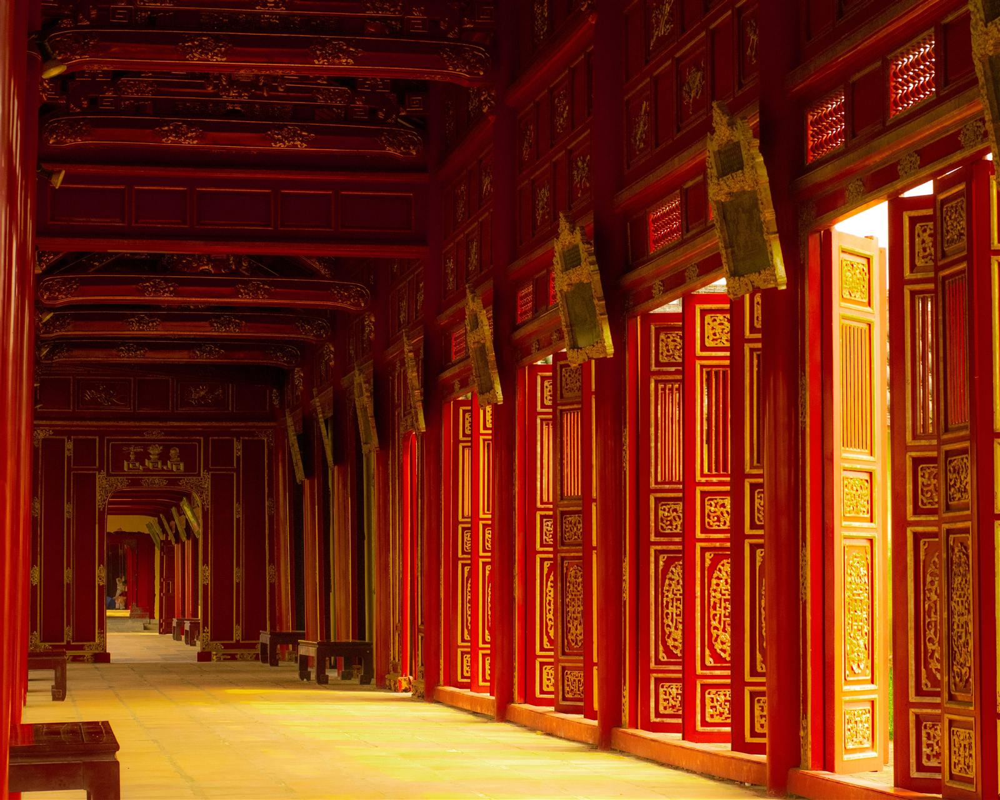

Hue
Once the capital of the Nguyen Dynasty, renowned for its harmonious blend of ancient palaces, peaceful riverside life and deep cultural traditions.
Overview
Hue, once the capital of the Nguyen Dynasty, is renowned for its harmonious blend of ancient palaces, peaceful riverside life and deeply rooted cultural traditions. From its iconic Imperial City to its peaceful Buddhist temples, Hue offers travelers a serene escape into Vietnam's rich history and spiritual heart. Today Hue remains a regal city, home to scholars, artists and culinary masters who still maintain the rich traditions passed down from its royal dynasties — a perfect destination for history lovers and foodies wanting to experience timeless traditions rooted in Vietnamese culture.
Highlights
- The Citadel, Imperial City and Forbidden Purple City of the Nguyen Dynasty
- A food tour through some of Vietnam's most famous dishes, born in Hue
- Thien Mu Pagoda
- A boat trip down the Perfume River
- Dong Ba Market
- The royal tombs
- Thuy Xuan Incense Village, learning the art of rolling incense
- The lights at Trang Tien Bridge
History
Hue's history is significant because the city once served as the political, cultural and religious heart of the country under Vietnam's last royal family, the Nguyen Dynasty, from 1802 to 1945. It stands as a symbol of national unification, royal heritage and resilience through modern conflicts. From this era came many aspects of traditional Vietnamese art, cuisine, music and poetry still celebrated nationwide today, making Hue a bustling hub for creatives and a living museum for Vietnam's national identity. Despite significant destruction during the American War, its iconic monuments have undergone reconstruction and received global recognition as a UNESCO World Heritage site in 1993 for their crucial role in Vietnamese national identity.
Travel Tips
- Rent a bicycle inside the Imperial Citadel, the grounds are large and walking in the heat is tough
- Beat the heat with a morning tour, the Imperial City has little shade and Hue can get extremely humid
- Book a local tour guide for the Citadel to gain deeper insight into this iconic complex
- Do an organised food tour to try Hue's famous dishes
- Dress respectfully and modestly around Hue's culturally significant monuments
- Drive the Hai Van Pass from Da Nang to Hue, an iconic coastal road to travel and sightsee at once
- Take the Reunification Express, Hue is one of its iconic stops
Best Time to Visit
The best time to visit Hue is from February to April. During this spring window, temperatures average a comfortable 20°C to 25°C with minimal rainfall.
Plan Your Trip